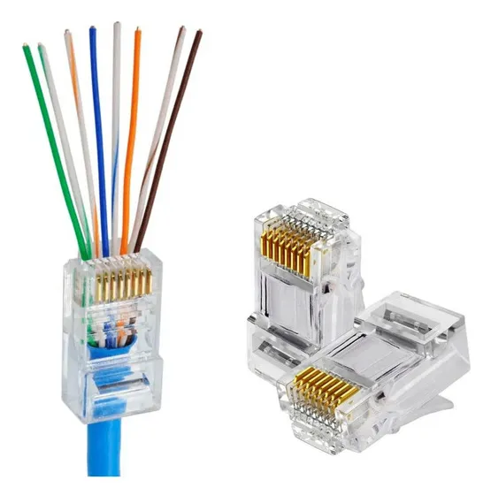
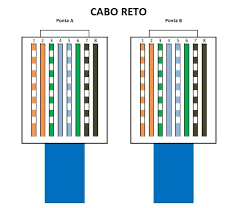
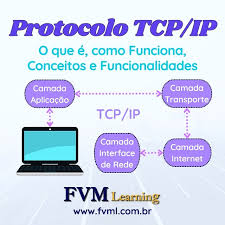

configuração de rede interna(cisco packet tracer)
No Cisco Packet Tracer, configurar uma rede interna envolve a criação de dispositivos como roteadores, switches, PCs e outros elementos, além de configurá-los para permitir a comunicação entre os dispositivos na rede local (LAN). A seguir, explico os passos gerais para criar uma rede interna simples no Packet Tracer.
 22.00.15_8f24e378.jpg)
configuração do servidores: (DNS) e de comunicação web (Servidor HTTP) e DHCP equipamentos aplicados
A configuração de servidores DNS, HTTP e DHCP no Cisco Packet Tracer envolve a configuração de equipamentos específicos para cada função e a interação entre eles.
Conceito de servidor
Um servidor é um sistema, dispositivo ou programa de software que fornece serviços, dados ou recursos a outros dispositivos, chamados de clientes, em uma rede. Esse relacionamento entre servidores e clientes é conhecido como arquitetura cliente-servidor.
DNS - o que é
O DNS (Domain Name System) é um sistema responsável por traduzir nomes de domínio (como www.google.com) em endereços IP (como 142.250.190.14), que são usados pelos computadores para localizar e se comunicar com servidores na internet. É essencial para o funcionamento da web, pois torna o acesso aos sites mais intuitivo para os usuários.
HTTP o que é
O HTTP (HyperText Transfer Protocol) é o protocolo de comunicação que permite a transferência de informações entre navegadores e servidores na internet. Ele é a base para o funcionamento da web, definindo como as mensagens são formatadas e transmitidas, e como servidores e navegadores devem agir ao receber essas mensagens.
DHCP o que é
O DHCP (Dynamic Host Configuration Protocol) é um protocolo de rede utilizado para atribuir automaticamente endereços IP e outras configurações de rede a dispositivos em uma rede local (LAN). Ele facilita a administração de redes, evitando que cada dispositivo tenha que ser configurado manualmente com um endereço IP.
foto da crimpagem
Crimpagem é o processo de unir dois componentes metálicos, como fios e conectores, utilizando pressão para garantir uma conexão elétrica ou mecânica. Esse processo é amplamente utilizado em redes de comunicação, principalmente para a fabricação de cabos de rede, como cabos Ethernet (Cat5e, Cat6, etc.), e também em outras áreas, como em sistemas automotivos, telecomunicações e até na fabricação de cabos de energia.
cabo de rede - pinagem
A pinagem de um cabo de rede se refere à disposição dos fios internos do cabo (geralmente 8 fios) nas posições corretas de um conector, como o RJ45, que é o padrão mais comum para cabos Ethernet. Existem duas principais formas de pinagem que podem ser usadas: o padrão T568A e o padrão T568B. A diferença entre eles está na ordem em que os fios são conectados nas extremidades do cabo.
Conceito do modelo OSI

O modelo OSI (Open Systems Interconnection) é uma estrutura conceitual usada para entender e descrever as funções de um sistema de comunicação em redes de computadores. Ele divide a comunicação de rede em sete camadas, cada uma com suas responsabilidades específicas. O objetivo do modelo é padronizar a comunicação entre sistemas de diferentes fabricantes, permitindo a interoperabilidade.
Conceito do TCP/IP
O modelo TCP/IP (Transmission Control Protocol/Internet Protocol) é um conjunto de protocolos de comunicação usados para a comunicação entre dispositivos em uma rede, como a internet. Ele é a base para a comunicação de dados em redes e está intimamente relacionado ao modelo OSI, mas com uma estrutura mais simplificada.
Cisco Packet Tracer
Cisco Packet Tracer é uma ferramenta de simulação de rede desenvolvida pela Cisco Systems, amplamente utilizada para ensinar e aprender sobre redes de computadores e protocolos de comunicação. Ele permite que os usuários criem, configurem e simulem redes sem a necessidade de hardware físico, o que facilita o aprendizado e a experimentação em ambientes de rede.